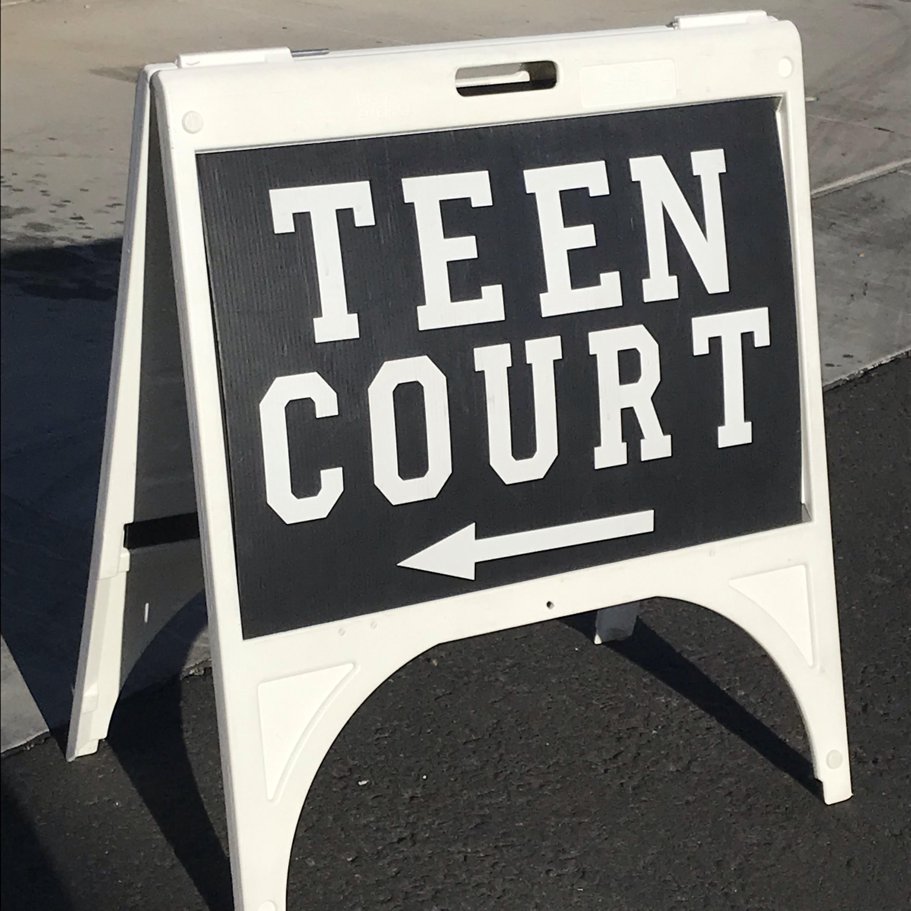

About Teen Court
Teen Court is a service offered by the West-MEC Law and Public Safety Program through the Maricopa County
Juvenile Probation Department as part of the Restorative Justice Program. Juveniles who have committed a
misdemeanor offense are provided the option of being tried in Teen Court as a way to restore justice for their
crime. During the court session, the juvenile is provided with the consequence for their actions from the jury.
Consequence can range from attending tutoring for bad grades to community service to even participating in the
teen court jury themselves. Juveniles who come before the courts have already pleaded guilty for to the crimes
they have committed, so al the court provides them with it the consequences for their actions. The main purpose
of the programs help students who have commited small crimes get off of the wrong path they are taking. The
program is not intended to punish the defendant, instead it increases their awareness of the consequences and
effects of their actions.
Further information about the program can be found here.
Student Participation
There are four main roles that student play while court is in session: the Attorney, the Victim Advocate,
the Bailiff, and the Jury Foreperson. The other first year student in the class sever as the courts jury. The
jury gets to hear the juvenile’s side of the case and determine the consequences that they should face.
